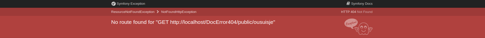
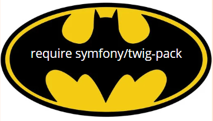
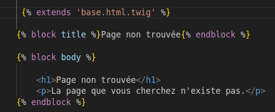
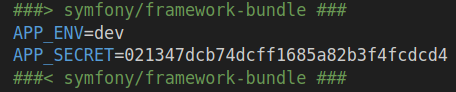
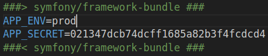

3
Symfony est magique donc oublie la saison 6, ou 7, je ne sais plus, plus besoin de créer dans ton controller une function pour les error404.
Mais voila, petit problème, tu auras besoin de "simuler" dans ton url une erreur 404 pour voir le résultat, taper kjbazefhkbfjezjfb derrière n'importe quelle route fonctionnelle de ton site ne marchera pas, Symfony te dira gentiment que cette route n'existe pas.
Pour commencer, ouvre ton terminal et envoie la commande suivante:
Ensuite, tu vas créer un sous-dossier bundles dans ton dossier templates, puis un sous-dossier TwigBundle de ton dossier bundles PUIIIIS un sous-dossier Exception de ton dossier TwigBundles...et ENFIN tu peux créer ton fichier error404.html.twig associé au dossier Exception.
Dans ton fichier error404.html.twig, tu peux y mettre ça pour tester:
Pour finir, il faut aller dans ton url et à la fin y ajouter /_error/404
ton template s'affiche, bravo.
Tu veux une autre façon de faire? Va dans ton fichier .env et au lieu de mettre APP_ENV=dev, tu mets APP_ENV=prod
 ensuite tu ouvres ton terminal et tu clear le cache, tiens: php bin/console cache:clear,
concrètement qu'est-ce que tu as fais là? Tu as simulé la mise en prod de ton site,
maintenant tu peux taper n'importe quel URL à la racine de ton projet:
ton template error 404 s'affichera. Voila, au revoir.
q